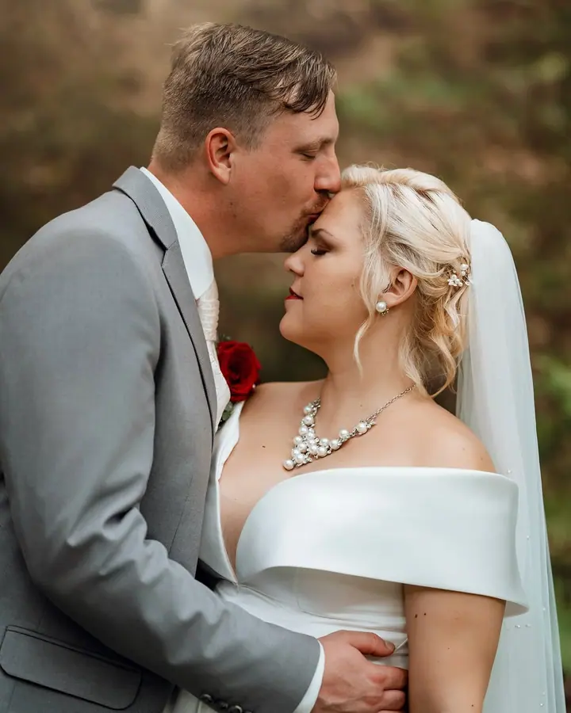
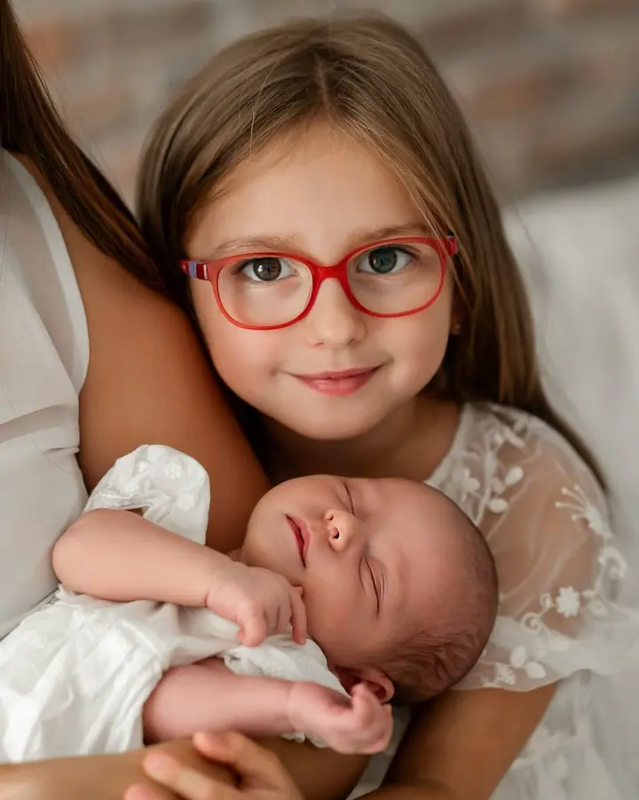
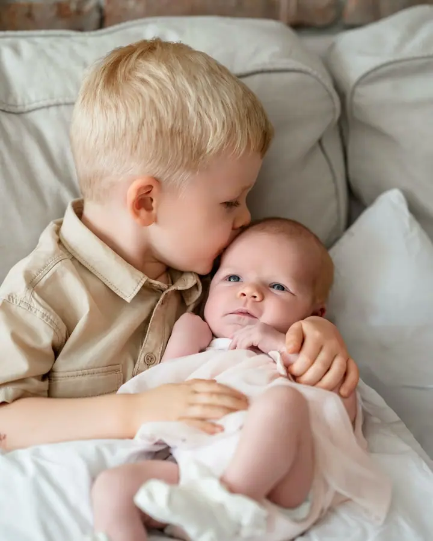
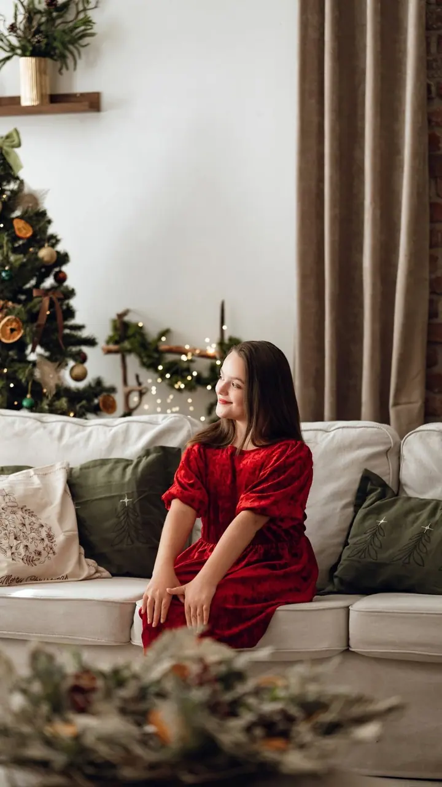

Svatby
Ve váš svatební den nejsem jen pozorovatel, ale tak trochu člen rodiny. Nejraději fotím spontánní chvíle, kdy se hosté smějí, tančí a sdílejí radost. Vybírat můžete z balíčků obřad, půl den a celý den.

Jmenuji se Denisa a jsem svatební a rodinná fotografka z Karlových Varů, která se nebála skočit do svého snu po hlavě. Jsem máma tří dětí, a tak vím, jak vzácné jsou oby…
Rezervovat termínFocení bylo mým koníčkem už od dětství, ale časem se z něj stala moje vášeň i životní cesta. Nejvíc mě baví fotografie, které vzniknou spontánně a upřímně. Doteky, pohledy a chvíle, které se slovy popsat nedají.


Jsem máma tří dětí. Ty mě naučily trpělivosti, empatii a schopnosti vnímat emoce v těch nejjemnějších detailech. A jen tak mě už nic nerozhodí, takže pláč, přebalování ani dětské blbnutí na focení nevadí.
Fotím svatby, miminka, rodiny, těhotenství, portréty i firemní a brandové fotky. Mám vlastní ateliér v Karlových Varech, kde pokaždé vymyslím nové prostředí. Na focení se snažím vytvořit pohodovou atmosféru, abyste mohli být sami sebou.
Co fotím
Ve váš svatební den nejsem jen pozorovatel, ale tak trochu člen rodiny. Nejraději fotím spontánní chvíle, kdy se hosté smějí, tančí a sdílejí radost. Vybírat můžete z balíčků obřad, půl den a celý den.
Jemné a přirozené focení bez stresu a bez složitých póz. Miminko je většinu času ve vaší náruči a na krmení, přebalení nebo pauzu je vždycky čas.
Smích, mazlení i trochu blbnutí, prostě obyčejné, ale vzácné chvíle s těmi, které milujete. Fotíme v ateliéru nebo tam, kde se cítíte dobře.
Portréty a jemné boudoir focení v ateliéru, kde pro vás pokaždé vymyslím nové prostředí a pozadí, abyste byla spokojená.
Postup
Ve formuláři mi dejte vědět, jaké focení vás zajímá. U svatby mi napište datum, místo a balíček, který zvažujete.
Probereme vaše představy a místo focení, ať už to bude můj ateliér v Rybářích, nebo vaše oblíbené místo či domov. Když vám žádný balíček nesedí, připravím vám nabídku na míru.
Nikam nespěcháme a nemusíte dokonale pózovat. Stačí být spolu, já mezitím fotím, co se mezi vámi přirozeně děje.
Vyberu a pečlivě upravím povedené záběry a pošlu vám je v elektronické podobě. U newborn focení dostanete vhodné fotky i v černobílé verzi.
Otázky
Ateliér je na adrese Sokolovská 170/60, Karlovy Vary, Rybáře, v 1. patře. Otevírací doba je podle domluvy. Fotit ale můžeme i jinde, za vámi dorazím kamkoliv.
Vybírat můžete z balíčků obřad, půl den a celý den. K celodennímu balíčku dostanete jako bonus svatební video. Počet fotek u balíčků je minimální, obvykle jich odevzdávám mnohem víc.
Focení miminka není vázané na konkrétní dny. Nejdůležitější je, abyste se jako rodiče cítili dobře. Samotné focení obvykle trvá 60 až 90 minut a probíhá v ateliéru nebo u vás doma.
Ano, u newborn i vánočního focení si další vybrané fotky můžete dokoupit za 150 Kč za kus.
